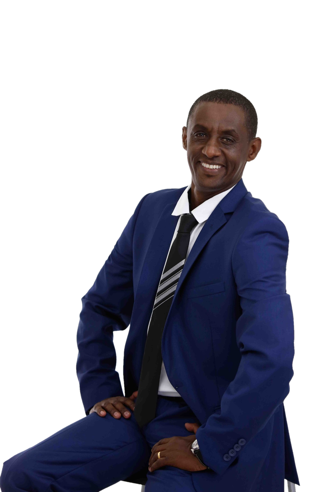

לקראת שבוע הסיגד
בגיל 13 הוא ברח מאתיופיה.
היום הוא עורך דין.
מה קרה בדרך?
נתיב האומץ
הרצאתו של עו״ד סולומון טקה
- איך ממשיכים ללכת כשהדרך לא מוכרת?
- איך מוצאים שייכות כשמרגישים שונים?
- איך בוחרים מי להיות, גם כשהנסיבות בוחרות בשבילנו?
מאתיופיה, דרך סודן, לישראל. היום:
עורך דין, אקטיביסט למען זכויות אדם
ומחבר הספר ״נתיב האומץ״.
הרצאה אישית ב-5 תחנות במסעמי אני? לאן אני שייך? איך בוחרים בדרך שלי?
מותאם לחטיבות ביניים, תיכונים ומכינות · עותקי הספר לספריית בית הספר במחיר מוזל
לתיאום הרצאה ולשמירת תאריךסולומון טקה, עו״ד
052-3700918